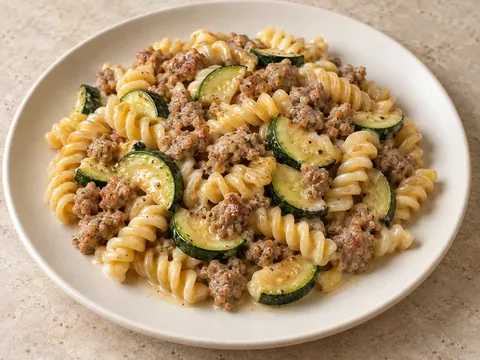
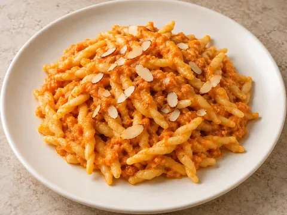
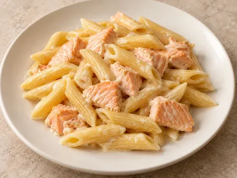
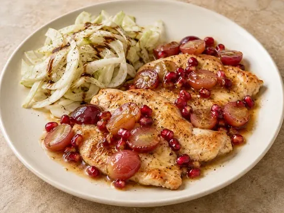
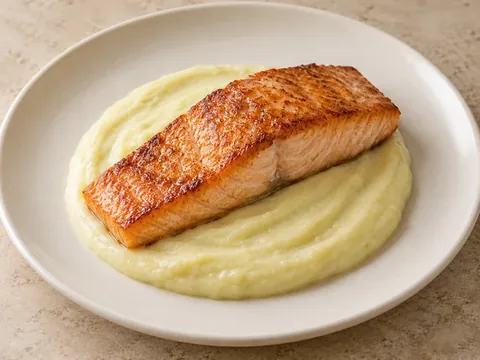
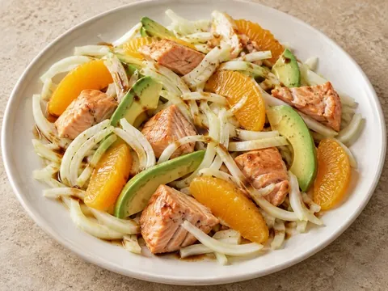
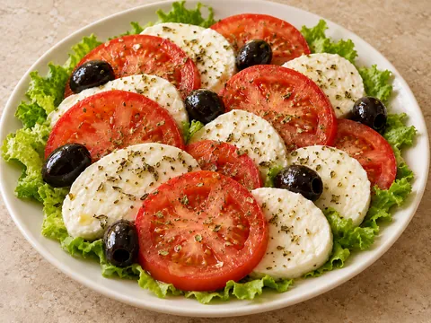

Udon con verdure, gamberetti* e pollo
Zucchine, carote e verza, con gamberetti*, pollo e salsa di soia.
010206
Valido solo a pranzo,
nel giorno sotto indicato
Zucchine, carote e verza, con gamberetti*, pollo e salsa di soia.
010206

Zucchine e salsiccia, legate con un tocco di panna.
0107

Trofie con un pesto di carote e mandorle.
0108

Salmone fresco e un tocco di panna.
010407

Con finocchi crudi all’aceto balsamico.
0107

Filetto di salmone croccante su una crema di patate e porri.
04

Condita con aceto balsamico.
04

Pomodoro, mozzarella, insalata verde, olive e origano.
07
Le immagini dei piatti, pur realistiche, sono generate con intelligenza artificiale e hanno scopo illustrativo.
Attendere la conferma del Ristorante per considerare valido l’ordine.